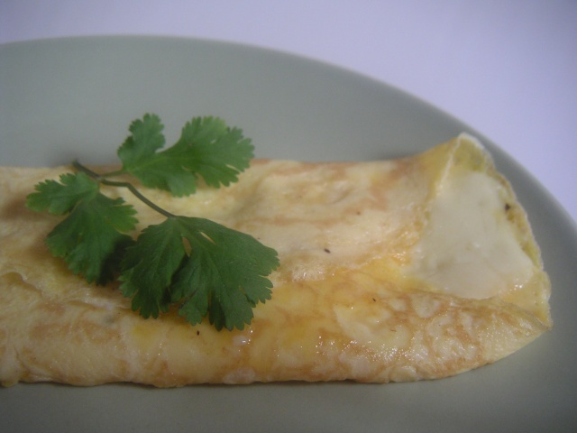

Omelette

This is what an omelette can look like
Ingredients
- 2 large eggs
- 1 tablespoon unsalted butter
- 2 tablespoons grated cheese
- salt
- pepper
- whatever additional seasonings or fillings you want to include
Directions
-
Crack eggs and put whites and yolks in bowl, then beat them together with a fork or whisk. Add seasoning to egg mix.
-
In a frying pan, melt butter over medium-low heat.
-
Add eggs to the pan and cook without stirring until the dges begin to set. With a spatula, push the edges towards the center and tilt the pan so that the uncooked eggs move to the edge. Repeat until eggs are overall fairly set but is still somewhat soft.
-
Add cheese and additional fillings of omelette into the middle of the pan.
-
Slide spatula around edges of the omelette to loosen, slip under egg and carefully fold in half. Put on plate and enjoy.
Go back to startpage